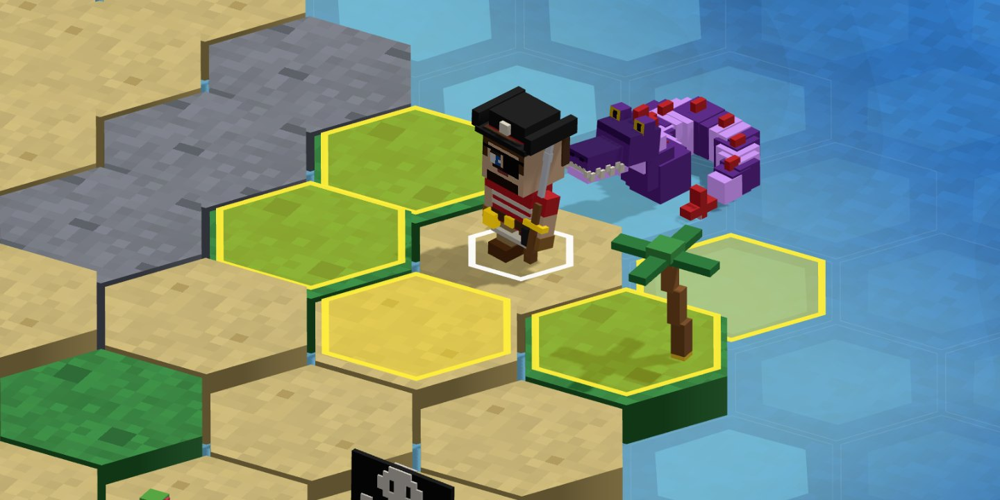
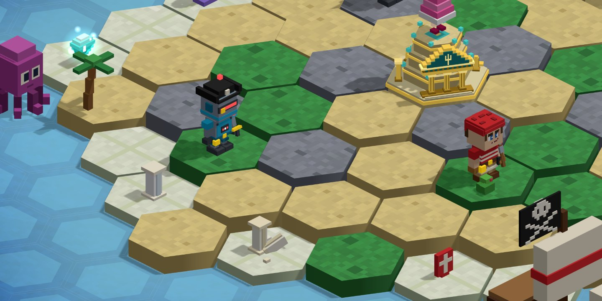
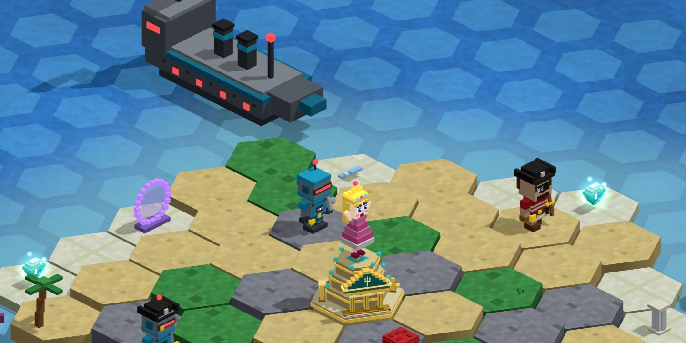
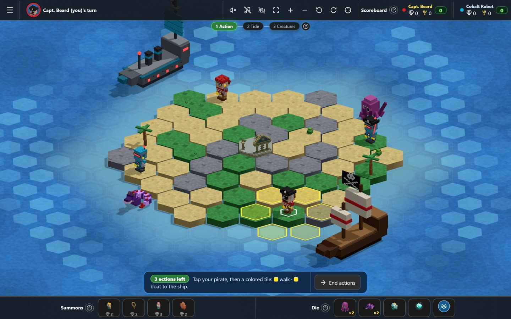
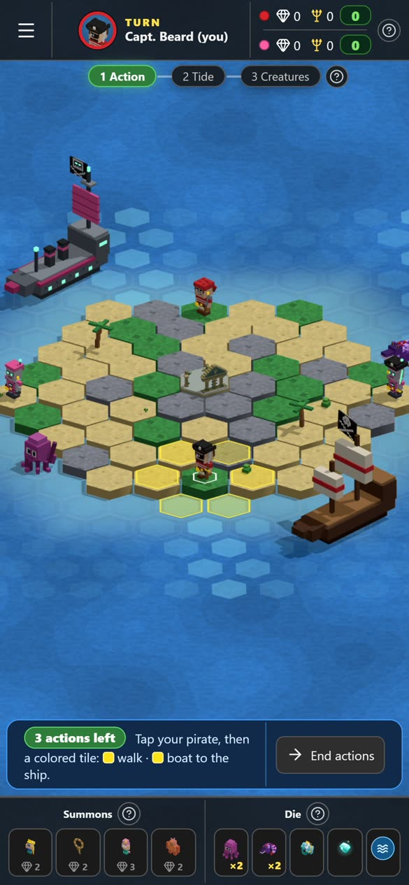
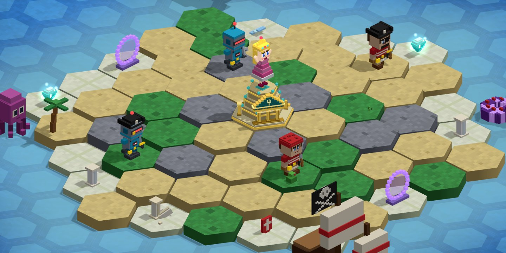
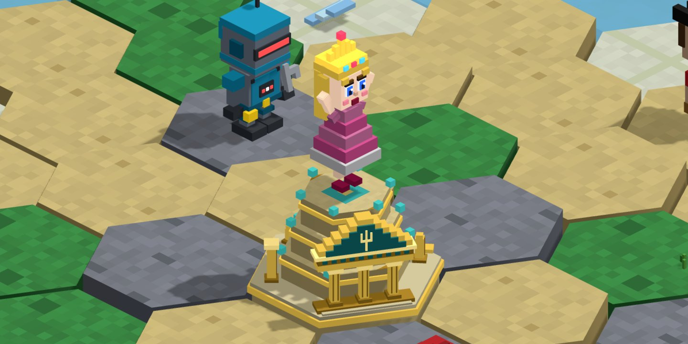

Trailer
How to play

1. Act
Use your 3 actions to walk, climb, row a boat, swim or push a rival.

2. Outrun the tide
An earthquake turns tiles into Atlantis and reveals the treasure hidden there.

3. Unleash the creatures
Roll the die and move the creature it picks against your rivals.
Screenshots




Can you escape?
The online rooms may take about a minute to wake up on the first visit.